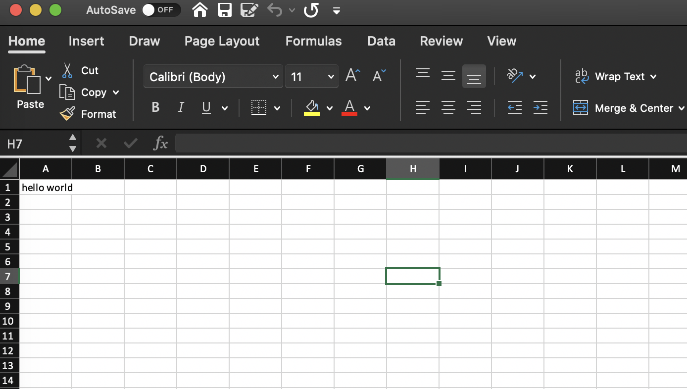

Introduction
Poi is a Python Package for writing data to xlsx files. It allows you to declaratively specify the Shape of your data, and Poi will manage how to write it to the corresponding Cell for you automatically. Poi is on top of the xlsxwriter library.
System requirements
Poi requires Python 3.7+.
Installation
pip install poi
Philosophy
Manually writing excel file using library like xlsxwriter has long been a pain point for application developers, you have to specify what to write in each cell and row, how to merge cells, the style of each cell, .etc. Leading to code like this:
# Iterate over the data and write it out row by row.
for item, cost in (expenses):
worksheet.write(row, col, item)
worksheet.write(row, col + 1, cost)
row += 1
# Write a total using a formula.
worksheet.write(row, 0, 'Total')
worksheet.write(row, 1, '=SUM(B1:B4)')
merge_format = workbook.add_format({
'bold': True,
'border': 6,
'align': 'center',
'valign': 'vcenter',
'fg_color': '#D7E4BC',
})
worksheet.merge_range(2, 1, 3, 3, 'Merged Cells', merge_format)
I think its too low level for application developers who just want to export some data to excel file. And maintaining imperative code like this is error prone and so hard that we may want a better way to deal with exporting data to excel. Why not just write a Schema of what we want to export and there's some tool to turn it to a valid xlsx file? Hopefully, this is just what Poi does.
Quick Start
A Hello World example.
What wee need is just a Sheet object.
from poi import Sheet, Cell
sheet = Sheet(
root=Cell("hello world")
)
sheet.write('hello.xlsx')
Then an xlsx file has been created.

What happened? We've created a Sheet object with a single Cell Node, which just contains the text hello world, and then we call sheet.write to write the sheet object to the hello.xlsx file.
See, that's pretty simple. Of course Poi's ability is far beyond this, jump to Basic Usage for more examples.